11 Hero · 33 kỹ năng · DW-STYLE-01
Tiếp nối bộ Kazu: viền vàng cũ, nền hiệu ứng riêng trong từng khung, nét mực và tạo khối góc cạnh. Mỗi bộ có ba kỹ năng theo thứ tự trái → giữa → phải. Tên, số sao và mô tả bên dưới lấy từ dữ liệu game.
Các hình này đang là bản thử để duyệt, chưa thay vào game. Kazu vẫn giữ bộ đã chốt.
Rodoc
Mở PNGTải PNG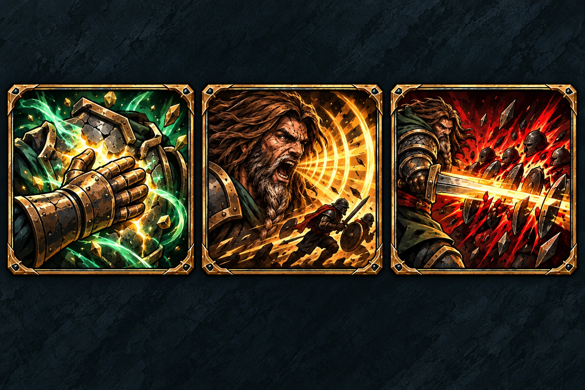
- Hồi Sức★★★
Hồi Sức · ★★★ · Hồi 1 HP cho bộ binh còn sống. Khi nhận đòn, HP sau tổng hồi phải lớn hơn sát thương sẽ nhận.
- Tiếng Thét Xung Trận★
Tiếng Thét Xung Trận · ★ · +2 Move cho tối đa 2 bộ binh chưa Attack, được đi thêm ngay. Hết lượt công.
- Chiến Thần★
Chiến Thần · ★ · Gây 1 sát thương mỗi mục tiêu, tối đa 4 địch cùng đường thẳng; chọn qua lính/Hero nhưng không qua vật cản địa hình, không có xuyên mặc định.
Est
Mở PNGTải PNG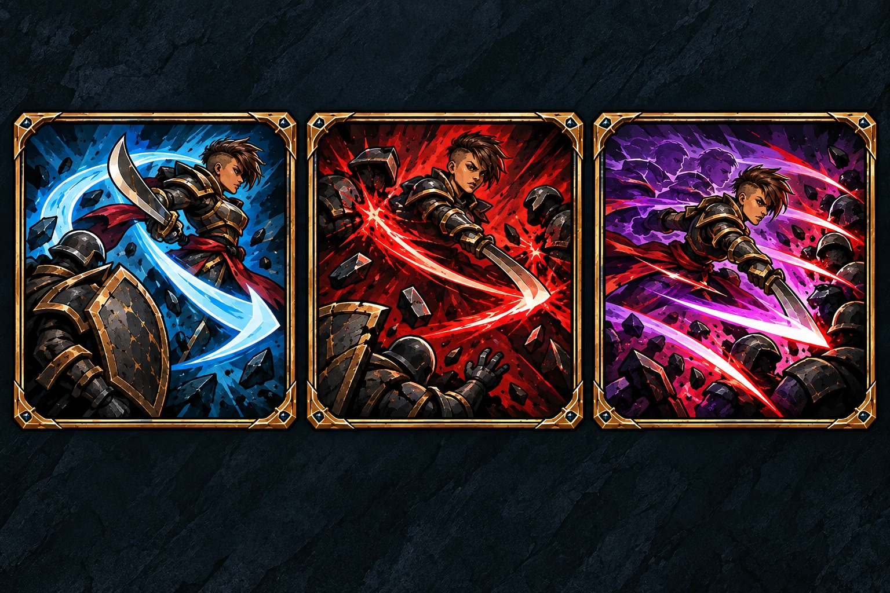
- Phi Thân★
Phi Thân · ★ · Đổi chỗ với một lính đồng đội cách 3 ô; lính nhận đòn thay và được phòng thủ.
- Phục Thù★
Phục Thù · ★ · Gây 1 sát thương lên tối đa 2 địch đã đánh đồng đội cách Est 3 ô trong lượt công này, kể cả đồng đội đã chết.
- Ác Mộng Phía Đông★
Ác Mộng Phía Đông · ★ · +2 Move, +3 mục tiêu cho đòn đánh; dùng sát thương cơ bản và trang bị. Hết lượt công.
Mask
Mở PNGTải PNG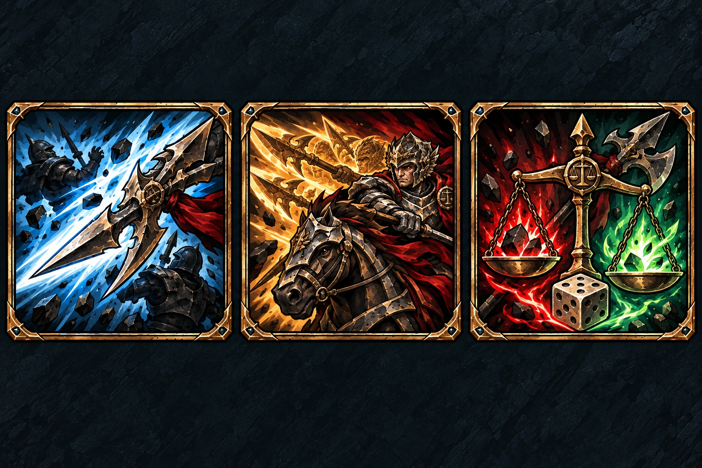
- Ma Kích★
Ma Kích · ★ · Gây 1 sát thương lên tối đa 2 địch cùng đường thẳng cách 3 ô; chọn qua lính/Hero nhưng không qua vật cản địa hình, không lan.
- Phán Quyết★
Phán Quyết · ★ · +1 lần đánh cho kỵ binh chưa Attack; mỗi lần có phòng thủ riêng. Hết lượt công.
- Cán Cân Công Lý★★★★
Cán Cân Công Lý · ★★★★ · Roll chẵn: 2 sát thương/hồi 2 HP; lẻ: 1/1. Mask vẫn hồi khi đòn bị né/hủy. Cấm Guard bộ binh.
Soul
Mở PNGTải PNG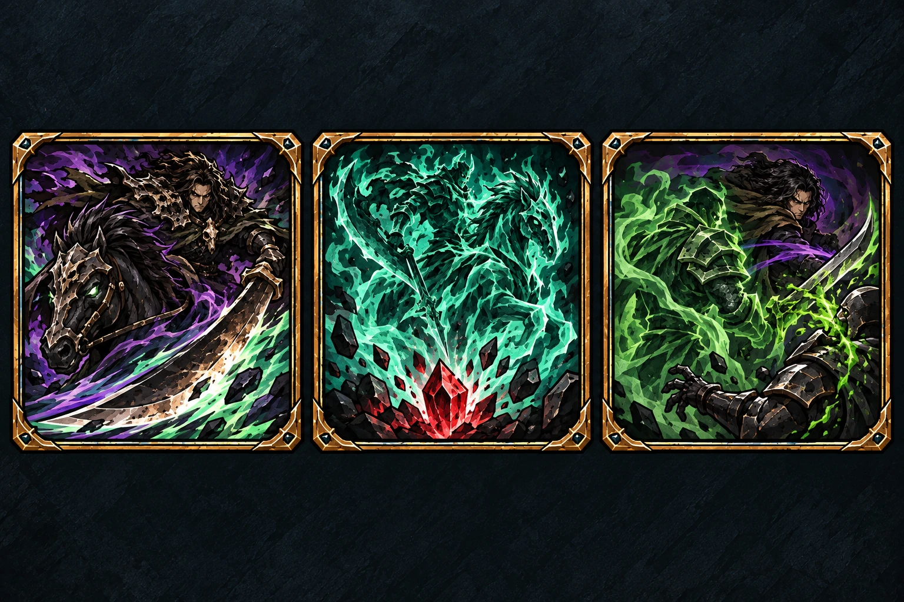
- Ám Kỵ★
Ám Kỵ · ★ · +1 sát thương và +1 Move trong lượt công; chưa Attack được đi thêm ngay.
- Triệu Gọi Ám Hồn★
Triệu Gọi Ám Hồn · ★ · Trả 1 HP, tạo kỵ binh mới tại hex trống cạnh Soul. Lính hành động ngay. Soul trả HP cuối vẫn chết/thua Duel.
- Thây Độc★★★
Thây Độc · ★★★ · Đổi chỗ với lính đồng đội, lính được phòng thủ. Kẻ đánh mất trực tiếp 1 HP kể cả đòn bị né/hủy.
Siri
Mở PNGTải PNG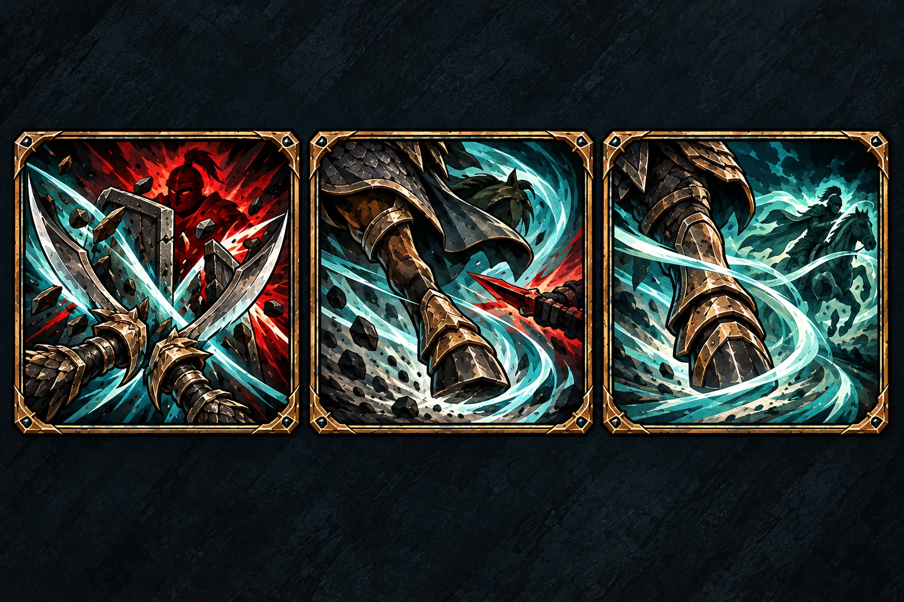
- Săn Người★
Săn Người · ★ · Các đòn thường và skill Attack của Siri cấm Guard bộ binh trong lượt công.
- Phong Bộ★
Phong Bộ · ★ · Di chuyển tối đa 3 ô, xuyên quân, tuân địa hình; đổi ô đích hợp lệ để hủy sát thương và hiệu ứng.
- Ám Phong★
Ám Phong · ★ · +3 Move cho 1 đồng đội chưa Attack, gồm Siri; đi thêm ngay. Hết lượt công.
Raen
Mở PNGTải PNG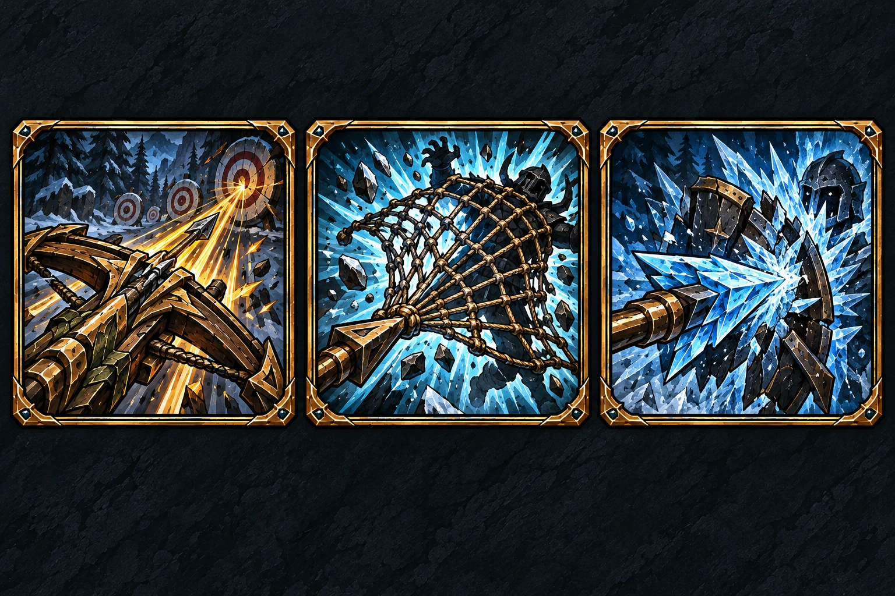
- Viễn Tiễn★
Viễn Tiễn · ★ · +1 tầm cho đòn thường và skill Attack của cung thủ chưa Attack. Hết lượt công.
- Tên Lưới★★
Tên Lưới · ★★ · Sau khi đồng đội/Raen bị đánh, chọn địch trong tầm, đẩy tối đa 4 ô rồi trói hết lượt công đối phương. Vẫn được dùng trang bị.
- Hàn Tiễn★★★
Hàn Tiễn · ★★★ · Gây 1 sát thương, đóng băng tới hết lượt hiện tại khi trúng kể cả 0 damage; xuyên quân/vật cản. Cấm Guard bộ binh.
Xacnas
Mở PNGTải PNG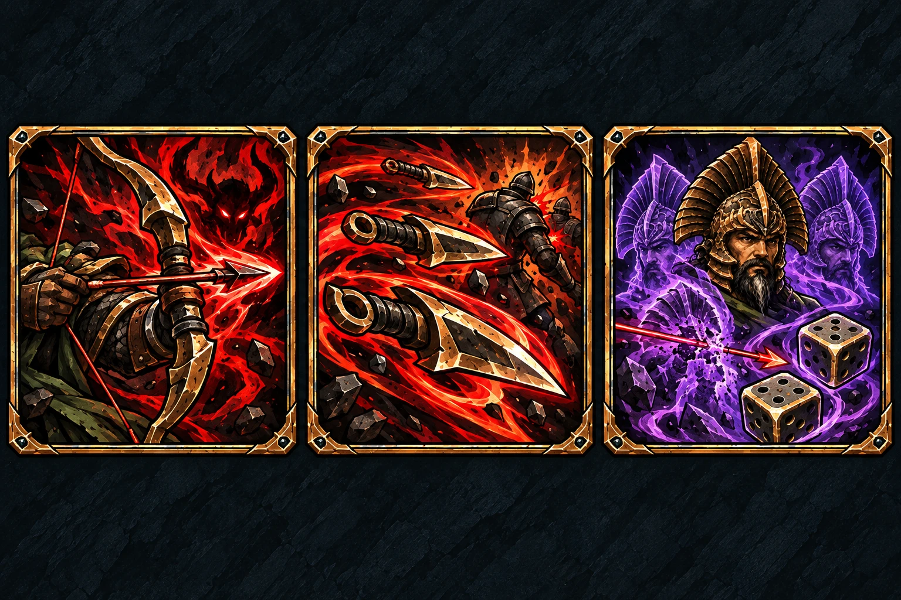
- Lời Chào Của Quỷ★
Lời Chào Của Quỷ · ★ · +1 sát thương cho cung thủ chưa Attack, áp dụng đòn thường/skill Attack. Hết lượt công.
- Bão Phi Đao★
Bão Phi Đao · ★ · Gây 1 sát thương mỗi mục tiêu, tối đa 2 địch trong tầm hiện tại, không cần cùng đường thẳng.
- Phân Bóng★★★
Phân Bóng · ★★★ · Chọn 2 số xúc xắc cho cả lượt thủ; mỗi lần đánh roll riêng, sai số hủy đòn và hiệu ứng. Kết hợp Guard/skill/trang bị hợp lệ.
Lucy
Mở PNGTải PNG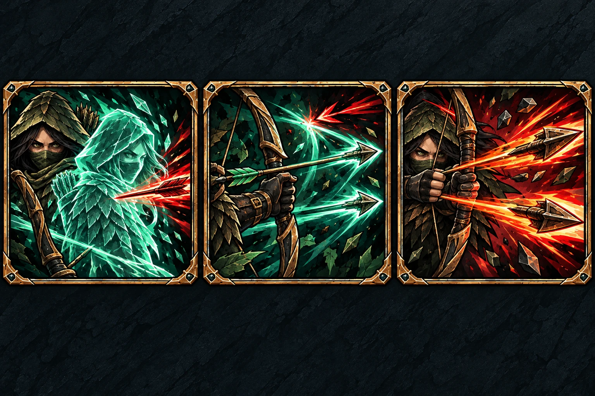
- Phân Ảnh★
Phân Ảnh · ★ · Hủy sát thương và hiệu ứng của một đòn nhắm Lucy, không ảnh hưởng mục tiêu khác.
- Bắn Trả★
Bắn Trả · ★ · Sau sát thương, nếu Lucy sống, bắn tối đa 2 địch bằng tầm/sát thương cơ bản, không buff/trang bị; địch không được thủ.
- Điên Cuồng★
Điên Cuồng · ★ · Dùng tầm đánh cung thủ: cơ bản 3 ô theo đường thẳng, được tăng tầm bởi buff/trang bị. Bắn 2 lần trong cùng commit, mỗi lần 2 sát thương; chọn mục tiêu riêng, mở thủ riêng, được thêm buff/trang bị.
Grim
Mở PNGTải PNG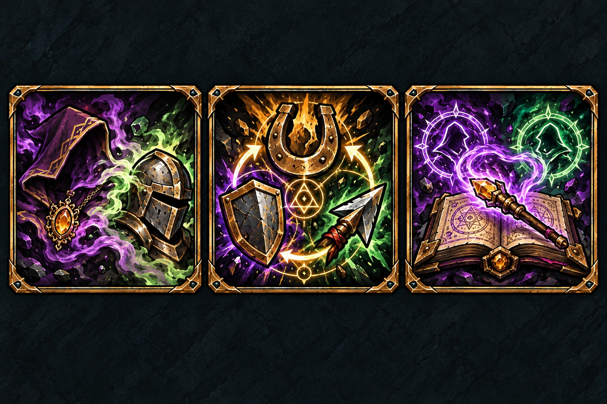
- Giả Dạng★
Giả Dạng · ★ · Biến thành chủng lính hợp mode tới lần biến tiếp; giữ Hero và HP. Trang bị không hợp chủng trả về hand.
- Cải Tạo Nhanh★
Cải Tạo Nhanh · ★ · Đổi vĩnh viễn chủng 1 lính đồng đội, đầy HP chủng mới, giữ trạng thái hành động; được dùng thủ của chủng mới.
- Sao Chép★★★
Sao Chép · ★★★ · Dùng skill Hero địch đã dùng trong trận, kể cả Hero chết; dùng chỉ số/vị trí Grim, sao hiệu lực min(sao gốc,3).
Neuro
Mở PNGTải PNG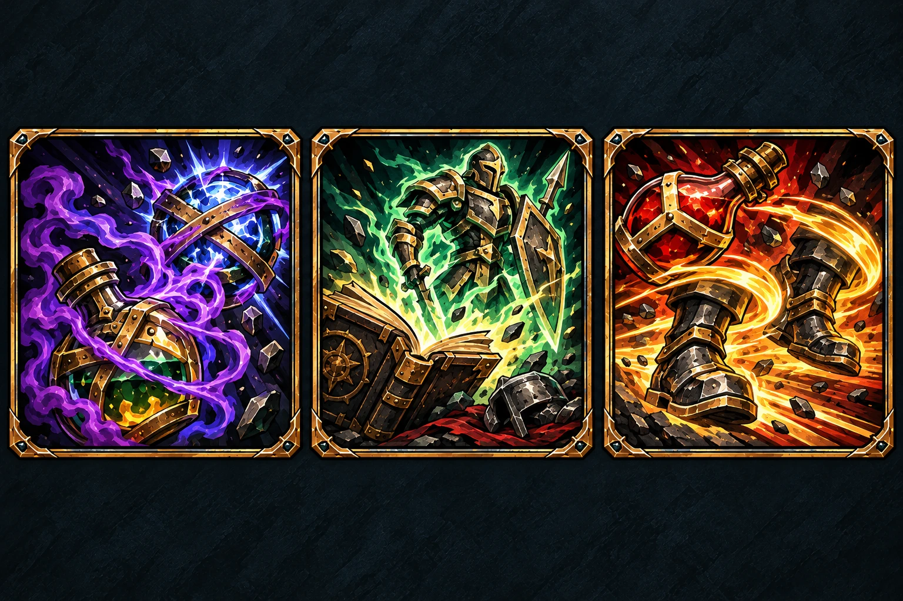
- Thuốc Câm★★★★
Thuốc Câm · ★★★★ · Khóa skill thủ 1 Hero tới hết lượt thủ hiện tại, không damage/commit; được né/hủy trước khi khóa, Guard/trang bị vẫn hợp lệ.
- Triệu Gọi★
Triệu Gọi · ★ · Sau khi từng có lính đồng đội chết, tạo mới lính đầy HP cạnh Neuro. Không tiêu thụ xác; giới hạn theo mode.
- Thuốc Cấm★
Thuốc Cấm · ★ · +2 Move cho tối đa 2 đồng đội chưa Attack, gồm Neuro; đi thêm ngay. Hết lượt công.
Ranus
Mở PNGTải PNG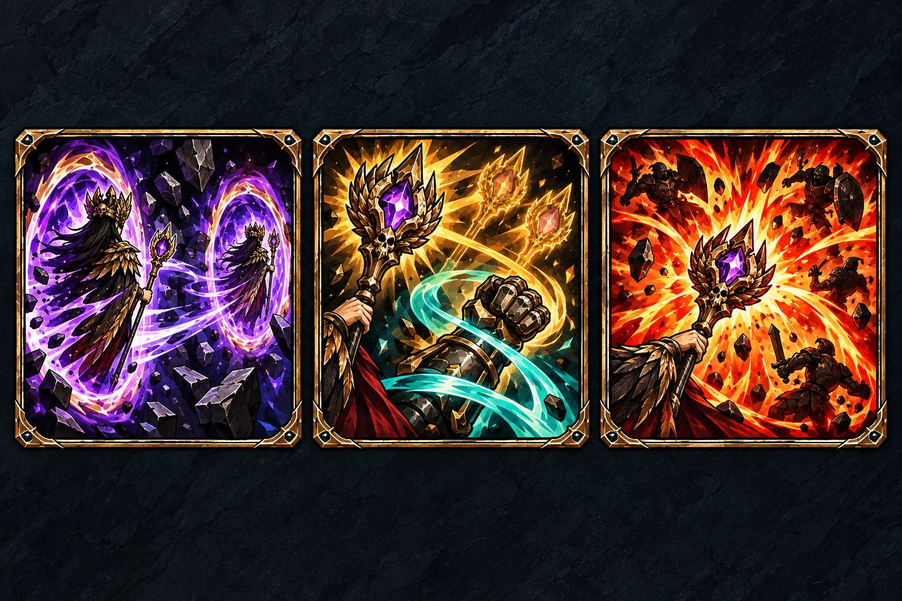
- Dịch Chuyển★
Dịch Chuyển · ★ · Dịch chuyển tới ô khác cách 4 ô, bỏ qua đường/quân/vật cản. Lượt thủ hủy đòn/hiệu ứng. Không tốn Move thường.
- Thuật Cường Hóa★
Thuật Cường Hóa · ★ · +1 lần đánh và +1 Move cho đồng đội chưa Attack, gồm Ranus; áp dụng đòn thường/skill Attack. Hết lượt công.
- Bùng Cháy★
Bùng Cháy · ★ · Gây 1 sát thương lên tối đa 4 địch quanh 2 ô, chọn qua quân/vật cản; được thêm chỉ số trang bị.